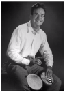

Feynman playing the bongo drums
Richard Philips Feynman (May 11, 1918-February15, 1988) was an American theoretical physicist known for his work in the path integarl formulation of quantnum mechanics, the theory of quantum electrondynamics, and the physics of the
superfluidity of supercooled liquid hellum, as well as in particle physics for which he proposed the parton model.